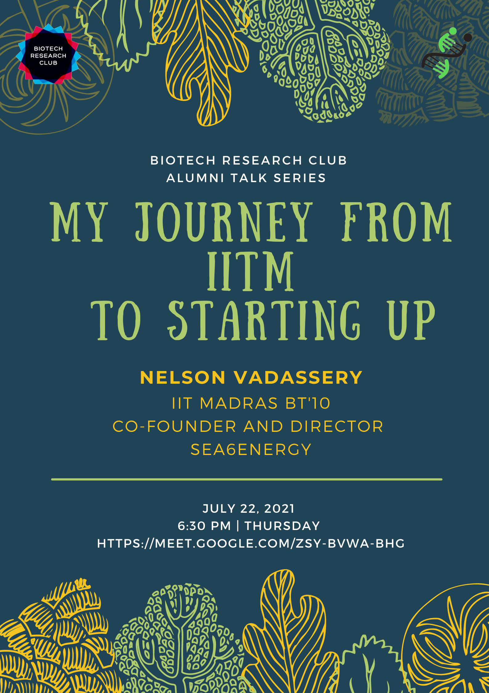

My Journey from IITM to Starting Up
Abstract
I joined IITM in 2005 - choosing Biotechnology without much of a clue of what I was getting into. I made a bunch of great friends, learnt a lot about biotechnology and even more about life in general. Finally, we all got through the struggles of graduation, ...and I ended up giving up a comfortable job to start up in a field I knew nothing about - seaweeds. We founded Sea6 Energy in 2010 with a vision of making large scale agriculture on the Oceans possible. It's been a fun ride since then - and I'd love to share a bit of that with all of you.
Biography of the speaker

Nelson is a Cofounder and Director of Engineering at Sea6 Energy. (www.sea6energy.com). Founded in 2010, the company is focused on developing technologies to produce large quantities of offshore biomass in a scaleable manner and its subsequent conversion into various products like food ingredients, agricultural biostimulants, biomaterials and biofuel. Nelson leads a multidisciplinary team working on the development of high throughput biomass production from the oceans. This involves systems to mechanize farming operations offshore, correlating weather and ocean data with seaweed growth, developing farm best practices and understanding the biology of the plant to maximize productivity. He is involved in developing seaweed cultivation systems in India and Indonesia. Nelson graduated from the Indian Institute of Technology Madras, Chennai, India with an Integrated Masters degree in Biotechnology and is passionate about applying the tools of modern agriculture and biotechnology into seaweed farming. Nelson has been featured as special mention in “Science and Green Tech category” in Forbes India “30 under 30” list, 2018.